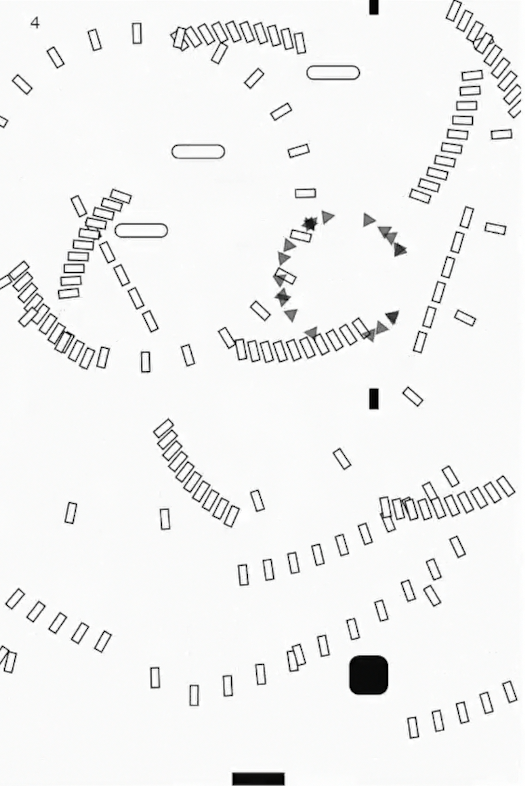
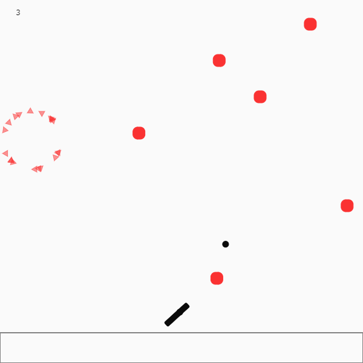
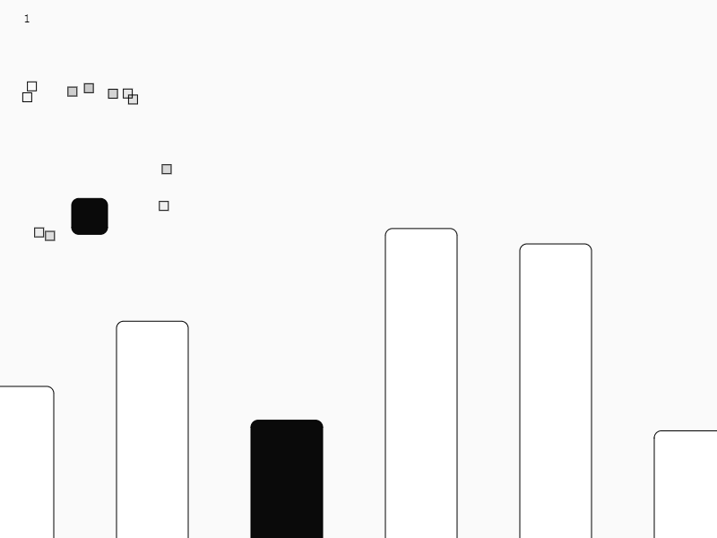
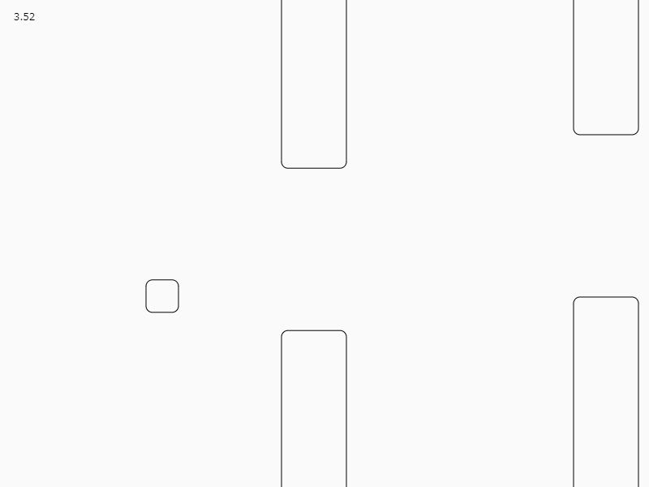

スマホでプレイ可能です（たぶん）。
rpc-shooting ・・・点数を競うシューティングゲーム。 （パソコンの場合は矢印キーで操作。モバイル端末はゲーム画面下の”mobile”を選択した上で、スワイプで操作。） 
rpc-snipe ・・・敵を狙って撃つゲーム （パソコンの場合はマウスカーソルを敵に合わせる。モバイル端末の場合は敵をタップ。） 
rpc-landing ・・・黒い地面に着陸するゲーム 
rpc-flappy-box ・・・FlappyBirdっぽい 
オンライン文化祭になると聞いて、急いでjavascriptを始めました。 これらのゲームはすべてp5.jsで作りました。processingをよく使うので使いやすかったです。
javascript,p5.jsを学ぶにあたって以下のサイトがとても役に立ちました。 flappy-boxはこのサイトのソースコードを元にしています。 この場を借りてお礼申し上げます。ありがとうございました。 https://fal-works.github.io/make-games-with-p5js/
以下の音源をお借りしました。ありがとうございます。
シューティングゲームの個人的最高点は56ポイントです。自分の作ったゲームで遊ぶってなんか虚しい。
Tweet #六甲学院物理部2020